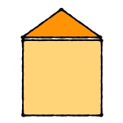

Monitoring how well we are delivering a service really means paying attention to the results we want to see.
We measure outcome, not activity.
For schools, those outcomes are:
Getting a good education depends on many other things outside school.
Family income »
Early education and childcare »
Home circumstances »

Making sure children get a good education in turn benefits other areas.
Economy »
Child health »
Income »
Schools in Devon:
Numbers of children of school age
Pupils with different needs and backgrounds